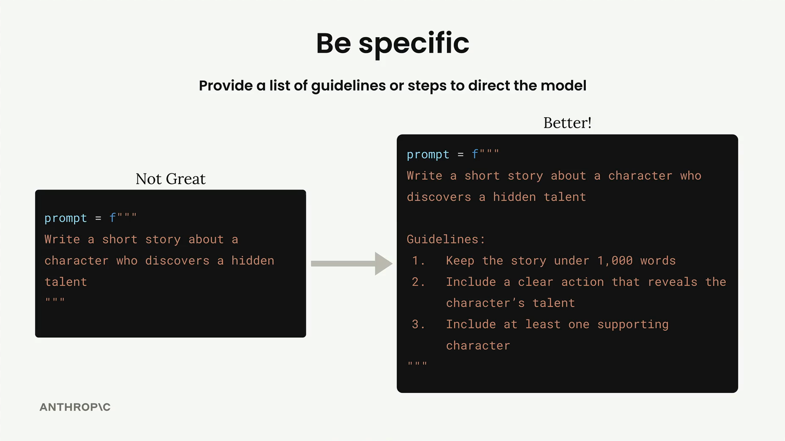
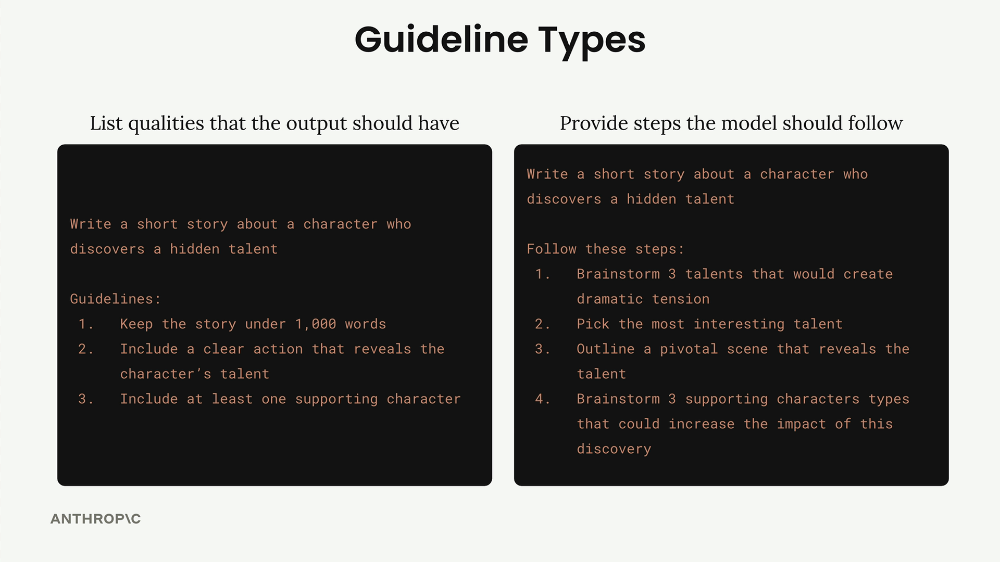
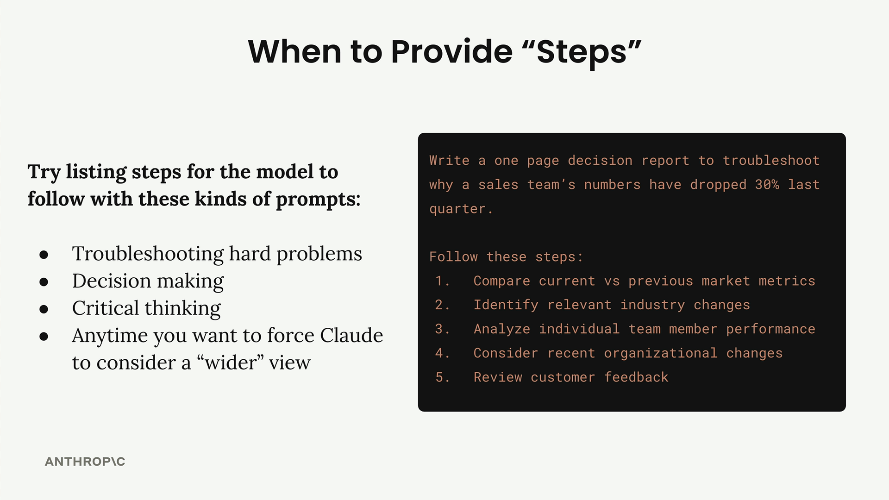

구체적으로 말하기
Claude와 작업할 때 결과물을 개선하는 가장 효과적인 방법 중 하나는 원하는 것을 구체적으로 명시하는 것입니다. 모든 것을 모델의 해석에 맡기는 대신, Claude가 원하는 방향의 출력물을 생성할 수 있도록 명확한 지침이나 단계를 제공할 수 있습니다.
이렇게 생각해보세요: Claude에게 "숨겨진 재능을 발견하는 캐릭터에 대한 단편 소설을 써줘"라고 요청하면, Claude는 수없이 많은 방향으로 이야기를 전개할 수 있습니다. 소설이 200단어일 수도 있고 2,000단어일 수도 있습니다. 등장인물이 한 명일 수도 있고 다섯 명일 수도 있습니다. 어떤 종류의 재능 발견 시나리오에도 초점을 맞출 수 있습니다.

구체적인 지침을 추가함으로써 Claude에게 더 명확한 목표를 제시할 수 있습니다. 이를 통해 출력물의 일관성과 품질이 크게 향상됩니다.
두 가지 유형의 지침
프롬프트에서 구체성을 높이는 두 가지 주요 접근 방식이 있으며, 전문적인 활용에서는 종종 두 가지를 함께 사용합니다.

출력 품질 지침
첫 번째 유형은 출력물이 갖춰야 할 특성을 나열하는 데 초점을 맞춥니다. 이러한 지침을 통해 다음을 제어할 수 있습니다:
- 응답 길이
- 구조와 형식
- 포함해야 할 특정 속성이나 요소
- 어조 또는 문체 요건
예를 들어, 소설이 1,000단어 이하여야 하고, 캐릭터의 재능을 드러내는 명확한 행동을 포함해야 하며, 조연 캐릭터가 최소 한 명 등장해야 한다고 명시할 수 있습니다.
프로세스 단계
두 번째 유형은 Claude가 따라야 할 구체적인 단계를 제시합니다. 이 접근 방식은 Claude가 문제를 체계적으로 생각하거나 최종 답변에 도달하기 전에 여러 관점을 고려하길 원할 때 특히 유용합니다.
바로 글쓰기로 넘어가는 대신, Claude에게 다음을 요청할 수 있습니다:
- 극적 긴장감을 만들어낼 재능 세 가지 브레인스토밍하기
- 가장 흥미로운 재능 선택하기
- 재능을 드러내는 핵심 장면 개요 작성하기
- 효과를 높일 수 있는 조연 캐릭터 유형 브레인스토밍하기
실제 효과
구체성이 만들어내는 차이는 극적입니다. 식단 계획 프롬프트를 테스트한 결과, 지침을 추가하자 평가 점수가 3.92에서 7.86으로 향상되었습니다. Claude에게 포함해야 할 요소를 정확히 알려주는 것만으로 출력물의 품질이 두 배 이상 향상된 것입니다.
Guidelines:
1. Include accurate daily calorie amount
2. Show protein, fat, and carb amounts
3. Specify when to eat each meal
4. Use only foods that fit restrictions
5. List all portion sizes in grams
6. Keep budget-friendly if mentioned각 접근 방식을 언제 사용할까
각 구체성 유형을 언제 사용할지에 대한 실용적인 가이드입니다:
출력 지침은 항상 사용하기
작성하는 거의 모든 프롬프트에 품질 지침을 포함해야 합니다. 일관되고 유용한 결과물을 얻기 위한 안전망입니다.
복잡한 문제에는 프로세스 단계 사용하기
다음과 같은 상황에서 단계별 지시사항을 추가하세요:
- 복잡한 문제 해결
- 의사 결정 시나리오
- 비판적 사고 과제
- Claude가 여러 각도를 고려하길 원하는 모든 상황

예를 들어, 영업팀의 성과가 왜 하락했는지 Claude에게 분석을 요청하는 경우, 단 하나의 잠재적 원인에만 집중하지 않고 시장 지표, 업계 변화, 개인 성과, 조직 변화, 고객 피드백을 검토하도록 안내하고 싶을 것입니다.
두 가지 접근 방식 결합하기
전문적인 프롬프팅에서는 두 가지 기법을 함께 사용하는 경우가 많습니다. 출력물의 형식과 내용을 제어하는 지침과, Claude가 응답하기 전에 문제를 철저히 생각하도록 보장하는 단계를 함께 활용할 수 있습니다.
이러한 조합을 통해 결과물의 일관성과 함께 Claude가 결론에 도달하는 과정에서 모든 중요한 요소를 고려했다는 확신을 얻을 수 있습니다.